Task Guides and SOPs
Find the procedure for your task
Choose a category, expand a guide, and follow the steps. Each guide explains what to check, what to record, and when the task is complete.
Complete SOPs & Guides
Email Procedure — Getfit Gmail
Keep getfit@urbanmuaythai.com organised, respond to website enquiries, and verify bookings in Clubworx. Every open conversation needs a clear next action and owner.
1. Start the inbox review
- Open Gmail and check the account is getfit@urbanmuaythai.com before reading or sending.
- Review the inbox and existing follow-ups. Suggested review points: start of shift, during the day, and before handover. Prioritise bookings happening soon, changes affecting today’s classes, and urgent member requests.
- Check Promotions and Updates as well as Primary. Website enquiry notifications have appeared in Promotions. Check Spam for missing expected messages; verify the sender before opening links.
- Open the whole conversation and read the latest customer and staff replies. Search the customer’s email address in Gmail and Clubworx to check for previous contact, duplicate notifications, or work already done by reception.
- Decide the next action: reply, verify a booking, ask for missing information, assign a follow-up, or escalate. Reading an email does not complete the task.
2. Email hygiene and filing
- Check before sending: sender account, To, Cc, customer name, program, dates, attachments and links. Use the current approved offer and timetable; check with Mel if unsure.
- Read the actual form: notification senders and Reply-To addresses can be a delivery service or support address. Match the recipient to the customer email in the form before sending. An internal staff reply is not proof the customer received it.
- Keep customer replies separate from internal discussion. Reply to the customer with the answer they need. Remove internal forwards, staff comments and other customers’ details from the outgoing message.
- Use existing labels. Apply the relevant Member Inquiries, lead or vendor label. Keep the message visible in the inbox until actioned, or record an owner and due date before using Snooze.
- Archive after processing. First save the communication in Clubworx and record any next action. Archive removes mail from the inbox while retaining it in All Mail. A label or read status alone does not prove the work is done.
- Keep records retrievable. Do not delete genuine enquiries, booking confirmations or member decisions as routine tidying. Use Spam for verified junk. Do not automatically archive enquiry or booking notifications without a reliable review process.
- Check outstanding work: review Snoozed, starred messages and drafts. A draft has not been sent; a star is a reminder, not a handover or task assignment.
3. Website Inquiry Form
Recognise it: observed subjects include “New Enquiry Received” and “Kids Trial Enquiry Recieved”. The message contains contact details, the enquiry and the website page used.
- Read the full form. Identify the contact person, the person who wants to train, program or age group, question, preferred times and any missing details. For children, distinguish the parent or guardian from the participant.
- Search Clubworx by email, phone and name. Open the matching prospect or member. If no record exists, follow the team’s prospect creation process; resolve uncertain matches before creating a duplicate.
- Copy the relevant enquiry into the correct Clubworx Notes, with the received date, website source and program. Confirm contact details against the form.
- Check whether they already have a booking. If not, answer their question using current approved information and offer the appropriate next step to arrange a trial or intro. An enquiry alone is not a confirmed booking.
- If age, program or availability is unclear, ask a short, specific question. Do not guess eligibility, promise a place, or invent prices and offers.
- Compose from Getfit. Compare the To address with the form email, personalise the response and include only verified information or the approved booking link. Check the link destination before sending.
- After sending, confirm the message appears in Sent to the correct recipient. Record the reply, staff member, outcome and next action in Clubworx. Move the lead label to Contacted only after contact is actually made.
- Set a follow-up owner and date according to the agreed lead follow-up process. If no interval is agreed, ask Mel to set it. Archive only after the action and follow-up are recorded.
4. Bookings Made — BOOK A CALL
Recognise it: the appointment email is titled BOOK A CALL (customer name). It shows the appointment date, start and end time, Brisbane time zone, a Location field, and the customer’s details under Booked by.
- Read the appointment email. Check the customer’s name, email and phone under Booked by. Record the appointment date, start/end time and the stated Australian Eastern Standard Time — Brisbane. Use the appointment time, rather than the email’s received time.
- Check the actual Google Calendar event. Open the calendar used for Getfit appointments and locate the matching BOOK A CALL event. Match the person, date, time and callback number. Check for an updated invitation, reschedule or cancellation before acting. Gmail’s summary can also show a previous event; use the current appointment’s details.
- Confirm who will make the call. Check the event, staff handover and existing tasks. Make sure the assigned caller can cover the slot. If no caller is assigned, or appointments conflict, ask reception or Mel to confirm an owner before the appointment.
- Match the customer in Clubworx. Search email, phone and name; review the existing enquiry, Notes, Comms and Tasks. Save the call booking and purpose on the correct prospect/member record. Follow the team’s prospect creation process if no record exists, and resolve uncertain matches before adding a duplicate.
- Check whether a confirmation has already been sent. Avoid repeating the booking email unnecessarily. If clarification is needed, reply from Getfit to the address under Booked by. Confirm the call date, Brisbane time and callback number. If the number is missing or inconsistent, resolve it before the call.
- Prepare the caller. Record the customer’s question, program of interest and relevant previous contact. Make the appointment and contact details visible to the caller, with a reminder or dated task in the team’s usual system. A call booking alone does not confirm a class booking or membership signup.
- Handle changes. If the customer or caller cannot make the slot, arrange a new time through the agreed booking process. Update the existing calendar appointment and Clubworx task, confirm the new date/time with the customer, and notify the caller. Check that the old slot is no longer treated as active.
- Record the result after the call. The caller records the action date/time, who called, and an accurate outcome such as spoke to customer, left voicemail, no answer, rescheduled or cancelled. Add a short summary and any agreed next step to Clubworx. If another staff member made the call, obtain their outcome before closing the task.
- Set the next action and file the email. Record any follow-up, trial/intro booking or information promised, with an owner and due date. Use the agreed follow-up interval for unanswered calls. Apply the relevant existing lead label based on what actually happened; an appointment notification alone does not mean Contacted or Converted. Archive once the booking is checked and the next action is recorded.
Class or trial booking notifications
If the email instead concerns a Clubworx class or trial event, verify that session in Clubworx Bookings and follow the relevant trial/member setup procedure. Use the BOOK A CALL steps above for scheduled phone appointments.
5. Use the existing Gmail labels
- Member Inquiries / Leads / New: a new lead awaiting initial handling.
- Member Inquiries / Leads / Contacted: contact has been made; keep the next follow-up in Clubworx.
- Member Inquiries / Leads / Converted: use only after the signup or conversion is verified in Clubworx.
- Not Converted / Not Signed Up: existing outcome labels; apply the team’s agreed distinction, and avoid closing a lead just because they have not replied yet.
- Vendors / Clubworx: identifies Clubworx system mail. Still read and action booking notifications; the vendor label is not a completion status.
- Member Inquiries / Cancellations or Suspensions: route to the relevant member-management procedure. Filing the email does not action the request.
6. Record the action and hand over
Use the correct person’s Clubworx Notes, Comms and Tasks. Record the original received date and action date separately if different. Include source, request, checks completed, reply or contact outcome, next action, owner and due date. Check that the entry saved.
Escalate unclear pricing or eligibility, conflicting bookings, duplicate records, complaints, refund or credit requests, and setup errors to Mel or the responsible reception team member. Include the issue, what you checked and what decision is needed. Keep customer communication and internal notes separate.
At the final review, list unresolved items and the next owner. Confirm enquiries and bookings have been checked in the Daily completion log. Log Clubworx errors in the Staff Error Log before correcting them under the approved error procedure.
7. End-of-review checklist
- Primary, Promotions, Updates and outstanding follow-ups checked.
- Every website enquiry matched to the correct record and replied to or assigned.
- BOOK A CALL appointments checked in Google Calendar; caller, callback number and Brisbane time confirmed; outcomes or follow-ups recorded in Clubworx.
- Outgoing recipient, account, dates and links checked; sent messages verified.
- Clubworx notes saved; pending work has an owner and due date.
- Labels reflect actual progress; processed mail archived; drafts and Snoozed reviewed.
- Unresolved issues handed over and the daily review recorded.
Gmail reference
For Gmail controls, see Google’s organise and archive email guide. The account labels and notification types above were checked in Getfit Gmail; example customer details are omitted.
New Member Spreadsheet SOP
Start with Clubworx Analysis, then open only the instructions you need. Detailed steps, screenshots and rollover definitions are below in expandable sections.
1. Check Clubworx first
Complete Clubworx Analysis before editing the spreadsheet. Identify new trial, Kickstarter and returning members, then confirm their details against Slack.
What to check in Clubworx
- Complete the relevant Clubworx Analysis activity review. Check new members and memberships in Clubworx, then cross-check the sign-up and returning-member updates in Slack so nobody is missed.
- Open the correct person. Verify full name, purchased program/membership, actual start date, payment amount and payment dates. An invoice or scheduled payment is not proof of a completed payment.
- Check Waivers, profile photo and member number. Read Notes, Comms and Tasks for previous conversations, agreed payment arrangements, rollover intentions and assigned work.
- Confirm whether the person is a new Kickstarter, trial member or returning member going straight to membership before choosing a spreadsheet status.
- Resolve conflicting information or record the outstanding question, next action and owner. Then continue to the spreadsheet duplicate check below.
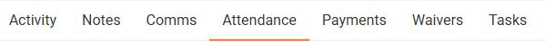
Which spreadsheet tab do I use?A quick explanation of Master, Reach Out and the reporting tabs.
Start here: which tab do I use?
Daily: complete Clubworx Analysis → confirm new members against Slack → check for duplicates → Add New Member → verify Master fields and rollover status → record outcomes and next actions. Monday: complete Clubworx Analysis and cross-check Slack → update trial, returning-member and Kickstarter records in Master → build Reach Out → download the 28-day attendance export → manually enter attendance for the members on Reach Out → complete follow-ups.
- Kickstarter Master: the source record for member details, status, attendance, reach-out notes and actual rollover dates.
- Reach Out: generated member groups for attendance checks and follow-up.
- 📅 Report Periods: the workbook’s reporting periods.
- 📊 Weekly / Monthly Rollover Report: outcome reporting based on the actual Rolled Over Date. Use Master’s Rollover Due Date and Reach Out to plan upcoming conversations.
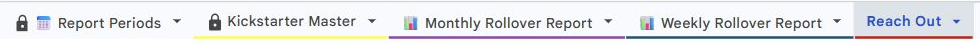
2. Add or update a memberCheck duplicates → complete the eight prompts → verify the saved row.
Complete the Clubworx checks above first. Then follow daily steps 1–3: check for an existing row, use Add New Member, and verify the saved details and status.
Daily step 1 — Gather verified details and check for an existing entry
- Using the completed Clubworx Analysis and Slack sign-up, gather the verified full name, lead source, program start date, purchased type, deposit, date sold, salesperson and age group.
- Open the correct person in Clubworx. Match the full name and member details before checking the membership and payment record. An invoice or scheduled payment is not proof of a completed payment.
- Open Kickstarter Master. Press Ctrl + F and search the full name. Check any matching row before adding another entry. Update an existing entry when appropriate; ask Mel if two people share a name or you cannot verify the details.
- Resolve missing or conflicting information before saving. Keep a follow-up task for an incomplete sign-up so it is not missed.
Daily step 2 — Open Add New Member
- In the spreadsheet, click 🥊 Urban MuayThai on the top menu bar.
- Click ➕ Add New Member.
- Complete the eight prompts below in order. Click OK after each valid answer. Cancel exits without adding the member.
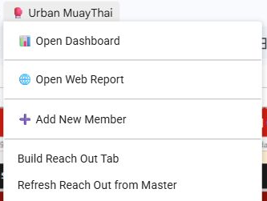
Prompt 1: Lead source
Enter 1 for Walk-in or 2 for Phone. Leave blank only when neither applies; click OK.
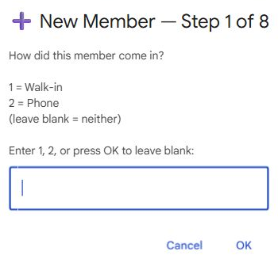
Prompt 2: Full name
Enter the member’s full name exactly as it appears in Clubworx. Check spelling and avoid nicknames; click OK.
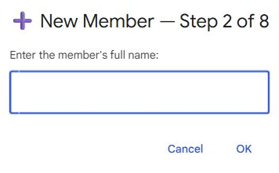
Prompt 3: Start date
Enter the confirmed program start date as DD/MM/YY, for example 09/10/26. This can differ from the sale date. Click OK.
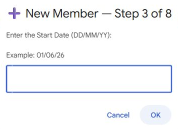
Prompt 4: KS type
Enter 1 = KS 28 days, 2 = 1 Week Trial, or 3 = Membership, matching the purchased product; click OK.
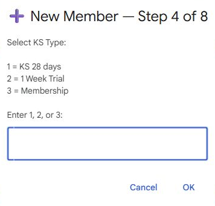
Prompt 5: Deposit
Enter the verified dollar amount as a number only, for example 220. Do not copy the example as a standard price. Confirm payment details in Clubworx; click OK.
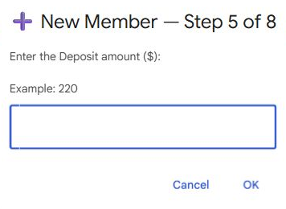
Prompt 6: Date sold
Type the actual Date Sold as DD/MM/YY, including for a sale made today, then click OK. Leaving it blank uses the script’s current date; an explicit date avoids date/timezone errors. This field records the sale date, not an assumed payment date.
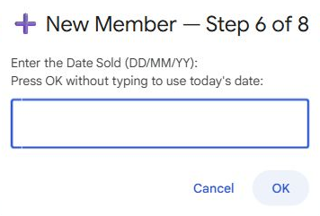
Prompt 7: Salesperson
Use the number shown in the live prompt: 1 Jakob, 2 Richie, 3 Mitch, 4 Harry, 5 Izzy, 6 Nick, 7 Ram. If the correct staff member is absent, ask Mel instead of selecting someone else. Click OK.
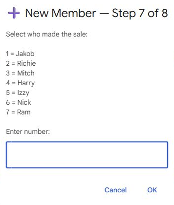
Prompt 8: Age group
Use the group confirmed in the sign-up: 1 Adults (18+), 2 Teens (15–18), 3 Kids (7–10), 4 Teens (11–15). Ask Mel if the correct group is unclear; click OK.
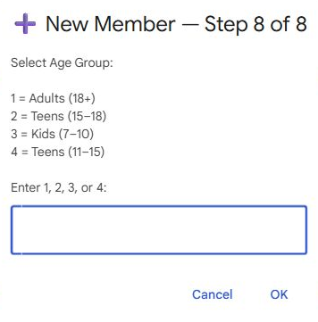
Review and save — the final confirmation
- At Confirm New Member, compare every displayed detail with the verified sign-up and Clubworx record.
- Click Yes only when all details are correct. Click No if anything is wrong; restart the wizard with the corrected information. The member is written only after Yes.
- Wait for Member Added! and note the row number. The sheet takes you to the new name in Kickstarter Master. If an error appears, check whether the row exists before retrying to avoid a duplicate.
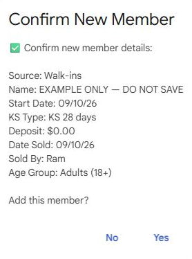
Daily step 3 — Review the information you entered
- Check B Intro Sales, C Name, D Start Date, L KS Type, R Deposit ($), S Date Sold, T Sold By and U Age Group.
- Check that calculated dates and week fields appear: E KS End Date, F Week 1, I Days from Start Date, J WEEK and M Rollover Due Date. If they are blank or clearly incorrect, ask Mel to repair the formulas.
- Choose the correct K Rollover Status using its dropdown. The wizard does not set this field. Use the verified current situation and the rollover status guide below. KS Type and Rollover Status describe different things.
- Check Q Membership against Clubworx where required. When an actual rollover outcome is confirmed, update K and enter its actual date in P Rolled Over Date. Do not use the planned due date as the actual outcome date.
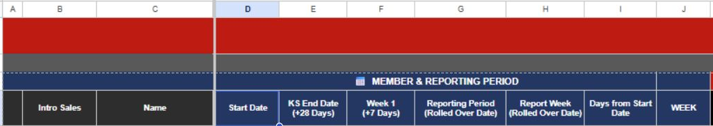
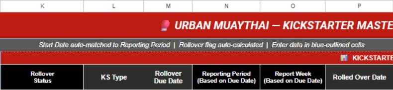
Spreadsheet field guideWhat each column means and which details staff need to verify.
The wizard fills the entry details. Staff must still verify the saved fields, choose the status and record confirmed outcomes.
Member and sale details
- B Intro Sales: Introductory sale/lead-source entry captured by the wizard, such as Walk-in or Phone. Check the recorded source; do not guess.
- C Name: Full name matching the correct Clubworx member.
- D Start Date: Actual program start date; it can differ from the sale or first-payment date.
- L KS Type: Product purchased: KS 28 days, 1 Week Trial or Membership. Separate from rollover progress.
- R Deposit ($): Verified deposit amount. Check whether it was actually paid in Clubworx.
- S Date Sold: Actual sale date used for sales reporting.
- T Sold By: Staff member who made the sale.
- U Age Group: Confirmed age category for the member.
Journey, rollover and follow-up
- E KS End Date / F Week 1: Calculated program dates. Verify against the confirmed start and journey; do not overwrite formulas.
- I Days from Start Date / J WEEK: Calculated progress through the program, used to plan follow-up.
- K Rollover Status: Current journey or confirmed decision. Use the definitions below.
- M Rollover Due Date: Planned rollover date, not proof of an actual rollover.
- N Reporting Period / O Report Week: Planning/report grouping fields; preserve calculated values.
- P Rolled Over Date: Actual confirmed outcome date used by outcome reporting. Do not substitute the planned due date.
- Q Membership: Verified ongoing membership checked against Clubworx.
- W–Z / W1–W4: Verified attendance for the relevant review periods; follow the Monday instructions for Week 4’s full-program review.
- BY / HOW / NOTES: Who followed up, contact method, and dated evidence, reply, next action and owner.
3. Choose the rollover statusUnderstand Straight to Membership, Rolled Over, Not Rolled Over, NO, Waiting and Extended.
KS Type tells us what was purchased. Rollover Status tells us where the member is in their journey or what they decided. Use the live dropdown option matching the confirmed situation. If a label differs or the situation is unclear, confirm the matching option with Mel.
Straight to Membership
A returning member who has already enrolled directly into an ongoing membership. They are not a Kickstarter rollover. Verify the membership in Clubworx and record the actual membership/outcome date for reporting.
Rolled Over
A member whose Kickstarter has converted into an ongoing membership. Confirm the membership is applied in Clubworx, then record the actual rollover date in P and membership in Q. A planned conversion is not yet Rolled Over.
Not Rolled Over
The member stated from the outset that they would not roll over after the Kickstarter. Record that original intention and supporting note. Exclude this status from the rollover-percentage calculation. Do not use it for someone who declines after a rollover conversation.
NO
The member said no after their rollover conversation. Record the conversation date and confirmed reply. This is a declined rollover outcome, distinct from an upfront no-rollover arrangement; do not reclassify it as Not Rolled Over to exclude it from the percentage.
Waiting
The outcome is not yet confirmed, or something must be resolved first—for example, a waiver or clarification of the member’s situation. Record what is pending, who will follow up and when. Use a specific live option such as Pending Waiver when appropriate; do not record a final yes or no prematurely.
Extended
The member’s Kickstarter journey or rollover timing has been extended. Record the reason, confirmed revised dates and next conversation date. Keep the record aligned with Clubworx and ask Mel to resolve calculated dates that no longer match.
Not Started Yet
The member has been entered but has not begun the program. Confirm the planned start and update it against actual attendance when they begin.
In Progress
The member is completing the Kickstarter and has no confirmed final rollover outcome. Continue the appropriate weekly attendance checks and follow-up.
Record the outcome and next actionSave dated notes, the actual outcome date and the person responsible.
Daily step 4 — Record the outcome and next action
- Confirm the spreadsheet matches the Clubworx checks completed at the start.
- Record the reply, status, dated next action and owner in the appropriate notes fields. Keep the Clubworx communication record current.
- For a confirmed outcome, enter the actual outcome date in P Rolled Over Date and verify Q Membership.
- Escalate discrepancies, missing access or script errors to Mel.
Monday attendance and Reach OutBuild Reach Out, export attendance, enter counts and record follow-ups.
Monday step 1 — Check Slack and Clubworx before building Reach Out
- Read the new-member and returning-member updates in Slack. Identify everyone who entered as a trial, returning member or Kickstarter.
- Open each person in Clubworx. Confirm the correct member, current membership/program, start date, payment details and any relevant notes or waiver issues.
- Check for an existing entry in Kickstarter Master. Add a missing member through Add New Member, or update the appropriate existing record. Check for duplicates before adding.
- Confirm the correct KS Type and Rollover Status using the status guide above. For a returning member already enrolled directly into membership, use the corresponding Straight to Membership option in the live dropdown. Choose the actual purchased program for KS Type; if the label differs, confirm the matching option with Mel.
- Check start dates, program/end dates and relevant outcome details. Resolve missing entries or conflicting information before continuing, so the generated Reach Out list reflects the current records.
Monday step 2 — Build Reach Out
- Choose 🥊 Urban MuayThai → Build Reach Out Tab.
- Wait for the script to finish, then open Reach Out. Check its reporting dates.
- Review the generated groups and the WK, NAME, TYPE, DAYS, KS END and ROLLOVER STATUS columns. Confirm the members checked in Slack and Clubworx appear in the appropriate group. If someone is missing, check their Master record and eligibility before rebuilding.
- Use the members listed on Reach Out as the list for your manual attendance update.
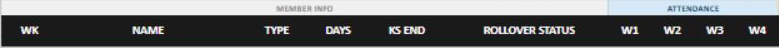
Monday step 3 — Export, open the email and download attendance
3a. Open the 28-day member attendance report
- In Clubworx, open Reports and search Initial 28 Day, or use the report link at the top of this guide.
- Open Initial 28 Day Member Attendance per 7 days (Every Monday), the report for members in their initial 28-day program. Check the title before exporting.
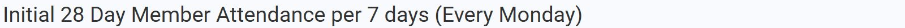
3b. Request the CSV export
- Click the download/export icon with the dropdown arrow near the top right.
- Choose Export to CSV.
- Clubworx sends the export directly to your email. Continue in your email inbox to get the report.
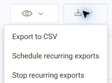
3c. Open the export email and download the report
- Open the inbox for your Clubworx account and find the latest Clubworx attendance export email. Check the report name and the email date/time so you use the new export.
- Open the email and use its download link or attachment to download the attendance CSV.
- Open the downloaded CSV in a spreadsheet beside Reach Out. If the email has not arrived, allow time for delivery, refresh the inbox and check spam/junk before requesting another export.
3d. Check the particular trial or Kickstarter member
- Choose the trial or Kickstarter member listed on Reach Out and find the same person in the emailed attendance export.
- Confirm the full name, membership/program and start/expiry dates before reading the attendance counts. Use Clubworx to resolve any unclear match.
- Check the attendance column and period that apply to that member’s review. Then manually enter the verified attendance on their Reach Out row as described in step 4.
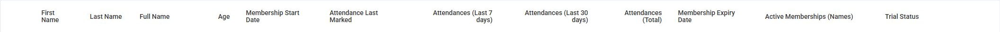
Monday step 4 — Manually enter attendance for each member on Reach Out
- Start with the first member on Reach Out and find the same person in the downloaded attendance export. Confirm the name and program dates; check Clubworx if the match is unclear.
- Check the member’s current WK and the attendance period you are recording. Enter the verified count in the appropriate W1, W2, W3 or W4 field on that person’s Reach Out row. Work through every member listed there.
- For Week 1–3, use the attendance count for the week being checked. Cross-check Week 3 and unusual results directly in Clubworx. Do not copy the same total into every week or overwrite a verified previous week with a different period.
- For Week 4 rollover review, verify attendance across the member’s full 28-day Kickstarter program and enter the confirmed full-program count in W4. Record the date range and total in Notes.
- If the export does not cover the needed member or period, open their Clubworx Attendance tab. In Bookings, set From and To for the relevant week or full program and choose the relevant membership. Count confirmed attendance, not every booking; check Gen. Attendance if used and avoid duplicate visits.
- Keep a confirmed zero as 0. A missing member, blank value or unverified count requires investigation; do not assume it means zero. Leave a clear note and next action for unresolved checks.
- Confirm each edited Reach Out attendance value has appeared in the matching Master column: W = W1, X = W2, Y = W3, Z = W4. If it has not saved, preserve the values and ask Mel to resolve the sync before rebuilding Reach Out.
- After entering attendance, review the list for zero/low attendance, changes in attendance and members near rollover. Prioritise the necessary follow-ups.
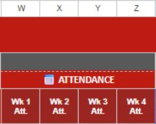
Monday step 5 — Record and assign the follow-up
- Read Clubworx Notes, Comms and Tasks and the spreadsheet’s previous notes before contacting the member. Check whether another staff member has already followed up.
- Assign or complete the appropriate conversation through the usual staff process. Personalise it to the confirmed attendance and situation.
- In Reach Out, record the staff member in the matching WK1/2/3/4 BY field and the contact method in its HOW field. Add the date, relevant reply, next action and owner in NOTES.
- Check that edits to status, weekly attendance, BY/HOW and Notes have appeared in the corresponding Kickstarter Master row. If they have not, preserve the details and ask Mel to resolve the sync; do not install triggers yourself.
- When a rollover outcome is confirmed, update Master K Rollover Status and P Rolled Over Date. Enter the verified membership in Q where appropriate. Reach Out does not replace the need to record P in Master.
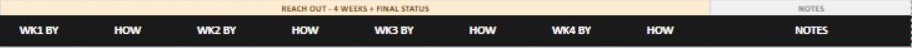
Build and check rollover reportsRebuild reports after recording confirmed outcomes.
Reporting — rebuild after recording outcomes
- Verify Master’s status and actual Rolled Over Date for every recorded outcome.
- Choose 🥊 Urban MuayThai → Build Weekly Rollover Report or Build Monthly Rollover Report as required. Wait for the script to finish, then open the corresponding report.
- Check the generated date and reporting period. Weekly outcomes are grouped Friday–Thursday; monthly outcomes use the calendar month of the actual Rolled Over Date.
- If an outcome is missing, check that Master P contains a valid date and K contains a status. Correct Master and rebuild. Sales totals also depend on S Date Sold.
- For upcoming rollover planning, check Master M Rollover Due Date, N Reporting Period and O Report Week, plus Reach Out’s KS end and status. Do not use outcome reports as a list of future due dates.
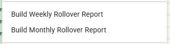
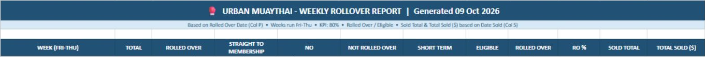
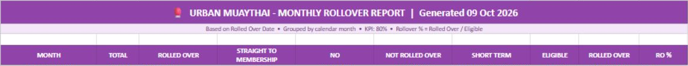
Before finishing — checklistConfirm daily or Monday work is complete and flag unresolved issues.
Before finishing
Daily checklist
- Clubworx Analysis was completed first and new members were cross-checked against Slack.
- Every verified new sign-up is recorded once.
- Master details, status and calculated dates have been checked.
- Clubworx payment and onboarding checks are complete or have an assigned next action.
- Replies and confirmed outcomes are recorded, including the actual outcome date.
Monday checklist
- Slack and Clubworx were checked for trials, returning members and Kickstarters, and Master was updated before building Reach Out.
- Reach Out was built, the 28-day member attendance export was requested in Clubworx, and the latest report was downloaded from the export email.
- Attendance was entered manually for every member on Reach Out, with missing or unclear counts investigated and edits verified in Master.
- Week 3 and full 28-day Week 4 reviews are complete; unusual Week 1/2 results were investigated.
- Follow-ups have an owner and dated notes, with changes verified in Master.
- Reports were regenerated where required; unresolved issues have been passed to Mel.
Daily Numbers Check Spreadsheet SOP
Daily procedure for checking rollovers, intro sales, straight-to-membership, cancellations, and net growth.
Purpose
The Daily Numbers Check Spreadsheet provides a daily snapshot of Urban Muaythai's key membership numbers.
- Rollovers
- Intro Sales
- Straight to Membership
- Cancellations
- Net Growth
Source Of Truth
The Kickstarter Master tab in the New Member Spreadsheet is the primary source of data for the Daily Numbers Check Spreadsheet.
Spreadsheet Structure
- Columns A-D: Date Information
- Columns E-I: Rollovers
- Columns J-N: Intro Sales
- Columns O-S: Straight to Membership
- Columns T-X: Cancellations
- Column Y: Net Growth
Rollovers
Rollovers are automatically populated from Kickstarter Master.
- A member is counted only when Rollover Status is marked as Rolled Over.
- A valid Rollover Date must be entered in Column P of Kickstarter Master.
- If the rollover date is blank, the member will not appear in Daily Numbers.
Daily check
- Confirm rolled-over members have current status.
- Confirm Column P has the correct rollover date.
- Check that no rollover date has been missed.
Intro Sales
Intro Sales are generated automatically from Kickstarter Master and do not require manual updating.
- Confirm all new members have been added to Kickstarter Master.
- Check that start dates are correct.
- Check that Kickstarter type has been entered correctly.
Straight To Membership
Straight to Membership figures are automatically generated from Kickstarter Master.
- A member is counted only when membership status is Straight to Membership.
- A valid Rollover Date must be entered in Column P.
- If there is no rollover date, the member will not appear in the report.
Daily check
- Confirm Straight to Membership has been selected correctly.
- Confirm Column P contains the correct rollover date.
Cancellations
Cancellations are maintained inside the Daily Numbers Check Spreadsheet and must be refreshed manually.
Step 1 — Open the correct Clubworx report
- Log into Clubworx and select Dashboard in the left-hand menu.
- Click the Cancelled members dashboard tile to open the membership activity report. You can also open the Cancellations report directly.
- In the report, select Cancellations from the row containing Members, Prospects, Cancellations, Upgrades, Downgrades and Trials.
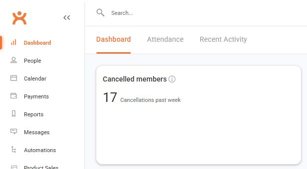
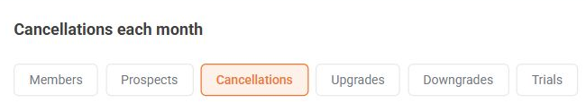
Step 2 — Set the full 2026 reporting year
- Find the two date fields beside Custom and Export.
- Set the first (start) date to 01 Jan 2026.
- Set the second (end) date to 31 Dec 2026. After typing each date, press Enter or click outside the field.
- Wait for the report to reload. Confirm the heading reads Cancellations — January 1st, 2026 — December 31st, 2026.
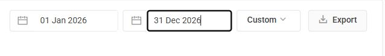
Step 3 — Export and check the CSV
- Click Export at the top right of the Cancellations report.
- Find the downloaded CSV in your browser downloads or Downloads folder. Clubworx uses a filename beginning cwx-cancellations-table-.
- Open the CSV in a spreadsheet and confirm the headers match the list below. Keep the original column order and include the header row when copying.
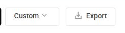
Expected columns A–K: Name, Membership, Up-front Amount, Recurring Amount, Recurring Payment Frequency, Membership Start, Membership End, Membership Duration, Total Collected, Cancellation Type, Reason.
Step 4 — Replace the raw data and synchronise
- Open the Daily Numbers Check Spreadsheet.
- Go to Cancellation Raw Dump. Clear the previous imported data in columns A–K, including any leftover rows from a longer export. Keep the tab and other report sheets.
- Paste the complete new CSV into A1, including headers. Replace the old import rather than appending to it.
- Open the Urban MT Sync menu.
- Select Run Cancellations Sync Only and allow the script to finish.
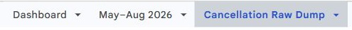
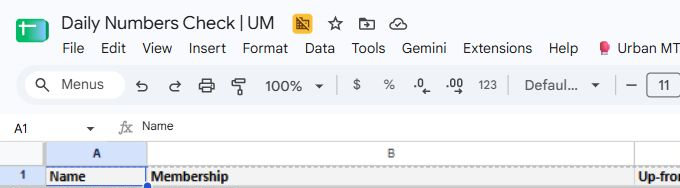
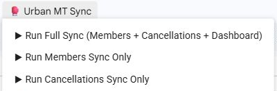
Running The Daily Synchronisation
- Open the Daily Numbers Check Spreadsheet.
- Click the Urban MT Sync menu.
- Select Run Full Sync (Members + Cancellations + Dashboard).
- Wait for the script to complete.
The full sync refreshes Rollovers, Intro Sales, Straight to Membership, and Cancellations. Net Growth recalculates automatically.
Net Growth
Net Growth = Rollovers + Straight to Membership - Cancellations
Daily Procedure
- Ensure the New Member Spreadsheet has been fully updated.
- Confirm new members, rollover statuses, Column P rollover dates, and Straight to Membership records are current.
- Update the cancellation report from Clubworx if new cancellations have occurred.
- Export cancellations for 1 January–31 December 2026, then replace the data in Cancellation Raw Dump from A1, including headers.
- Run Cancellations Sync Only from the Urban MT Sync menu.
- Run Full Sync (Members + Cancellations + Dashboard).
- Review rollovers, intro sales, straight-to-membership numbers, cancellations, and net growth.
- Investigate unexpected changes before reporting numbers.
Daily Completion Checklist
- New Member Spreadsheet has been updated.
- All rollover dates have been entered into Column P.
- Straight to Membership records include a rollover date.
- Latest dashboard Cancellations report has been exported from Clubworx for 1 January–31 December 2026.
- Cancellation data has been pasted into the spreadsheet.
- Run Cancellations Sync Only completed successfully.
- Run Full Sync (Members + Cancellations + Dashboard) has been run.
- Rollovers, Intro Sales, Straight to Membership, Cancellations, and Net Growth have been reviewed for accuracy.
Quality Standard
- All membership data reflects the latest information from the New Member Spreadsheet.
- Cancellation data is current.
- All synchronisation processes have completed successfully.
- Net Growth is calculated automatically without manual adjustments.
- The spreadsheet reflects the current day's membership performance.
Escalation Rules
- Escalate missing rollovers, incorrect Column P dates, missing Straight to Membership figures, cancellation mismatches, sync failures, incorrect Net Growth, or mismatches with New Member Spreadsheet or Clubworx.
Attendance Past 7 Days SOP
Every Monday: copy the template, export the saved Clubworx member report, replace RAW DATA, run Pipeline Party, validate results and prepare follow-up.
Start here
The Admin/Assistant completes this every Monday before Fringe Reach Out. You need Clubworx access, the report export email and editing access to the weekly spreadsheet.
Controls and script checked on 11 October 2026; screenshot guide reviewed on 12 October 2026. Screenshots show controls and headers without member details. The example template contains old results: they are not this week’s figures.
Step 1 — Make and name this week’s copy
- Open the template using the button above. Select File → Make a copy.
- Enter Urban Muaythai Attendance Past 7 Days - [Monday’s Date], for example Urban Muaythai Attendance Past 7 Days - 12 October 2026.
- Check the folder before copying. The template currently defaults to Fringe | Attendance last 7 days. Use the established weekly attendance folder that feeds the Attendance Dashboard; if another Fringe Reach Out folder is proposed, confirm it with Mel before saving there.
- Keep the attached Tracker Apps Script in the copy. Use the team’s established sharing arrangement, then click Make a copy. Open the new file and confirm its title and access before proceeding.
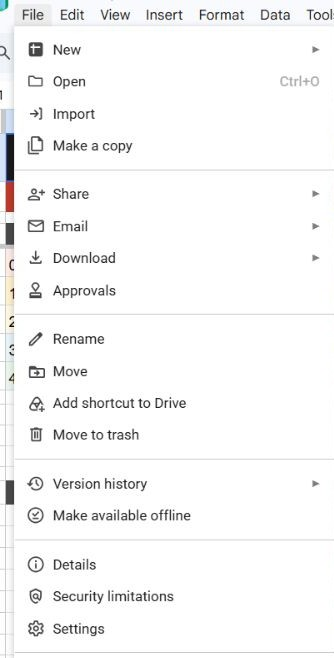
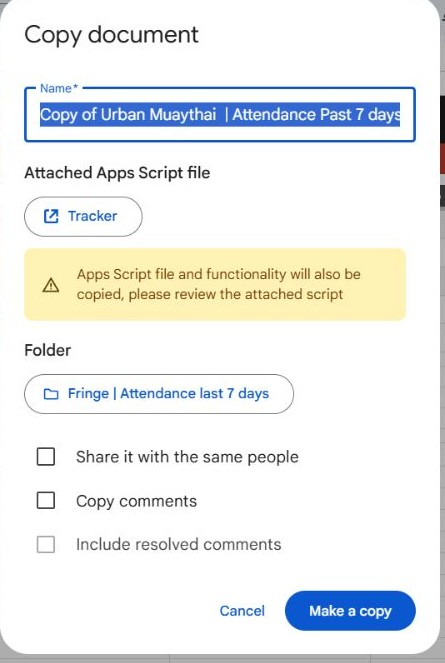
Step 2 — Open the correct Clubworx report
- In Clubworx select Reports → Custom. Search for Attendances Past 7 days and open that exact report, or use the report button above.
- Check the seven column headings against Step 4. This is a per-member summary with seven-day and thirty-day totals. Keep members with zero attendance in the export.
- Use a fresh Monday export. The Last 7 days field is a rolling total when exported; it is not a historical week chosen by the spreadsheet filename. If processing late or reconstructing an old week, ask Mel for the approved historical report.
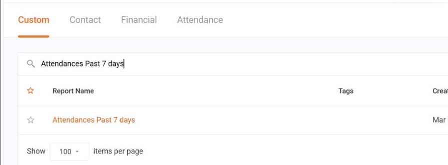
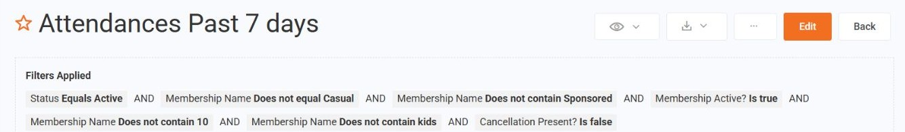
Step 3 — Export the CSV and open the email
- Click the download arrow beside the report title → Export to CSV.
- Wait for Clubworx’s generation notice. This report is sent to the email address shown in that notice. Open that mailbox and find the newly generated export, checking the report name and time. If you cannot access it, ask the responsible admin for the export.
- Open/download the CSV from the email. Use the original complete export, including every report page, rather than copying the ten rows displayed in Clubworx. Confirm its row count and all seven columns.
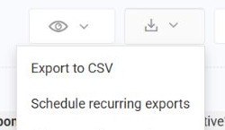
Step 4 — Replace RAW DATA starting at A2
- In the new weekly copy select RAW DATA. Leave the header row (row 1) in place.
- Select A2:G1000 using the Name box and press Delete to clear old values. Extend the selection through the last existing row if the sheet has grown. Clear contents only; keep the sheet and headers.
- In the CSV select every data row in columns A–G, excluding the CSV header. Copy, select A2 in RAW DATA and paste values (Ctrl+Shift+V). Add rows if needed.
- Verify the first and final records, row count, seven separate columns and numerical attendance values. A repeated header in row 2, blank attendance counts or everything pasted into one column must be fixed before running. Preserve phone numbers as text where possible and check country codes/leading zeros against Clubworx before contact.
Row 1 must read, in order: First Name | Last Name | Phone Number | Attendances (Last 7 days) | Attendance Last Marked | Attendances (Last 30 days) | Membership Name.
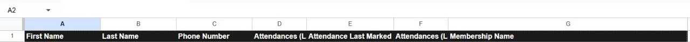
Step 5 — Run Pipeline Party once
- Confirm you are in the weekly copy, the import is complete, and no staff have started adding notes.
- Select 🥊 Pipeline Party → ▶️ Run Pipeline Party. Wait without editing.
- If the copied script needs authorization, use the team’s approved account and process. Ask Mel if approval is unavailable or an unexpected access request appears. Do not install code or create an auto-trigger as part of this weekly procedure.
- Confirm the success alert begins ✅ Done! Pipeline Party sheet updated. Review its date, tracked/excluded totals, five attendance bands, Fringe Adults/U18 and Needs Review count. If it errors, stop and retain the error details for Mel.
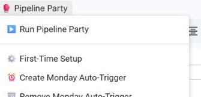
Step 6 — Verify the dashboard and generated tabs
Open 📊 DASHBOARD. The date is the run date, not a historical date extracted from the CSV. Confirm these tabs exist: 0 — Critical 🔴, 1 — At Risk 🟠, 2 — Low 🟡, 3 — Okay 🔵, 4+ — Good 🟢, Fringe — Adults, Fringe — U18, ⚠ Needs Review, ⛔ Excluded Members.
- Five attendance-band counts must sum to tracked rows; tracked plus excluded rows must match populated imported records.
- Spot-check zero, one-session and higher-attendance records against RAW DATA and Clubworx.
- Check duplicate member/membership rows before assigning contact. The script counts rows and does not deduplicate people; one phone can also belong to a family.
- Fringe lists overlap the attendance bands. Do not add their totals again to the tracked total.
Fringe is based on the membership target, not simply everyone with 1–3 visits: a 2/week plan is engaged at 2, a 3/week plan at 3, and a 5/week or Unlimited/Accelerate plan at 4+. Recognised plans with positive attendance below the target are Fringe; zero attendance is Sleeper. Unknown targets are listed in Needs Review, including unknown plans with zero attendance.
The script excludes membership names containing kickstarter, trial, thailand tour, sponsored, payment or personal trainer. Their follow-up belongs in the relevant approved workflow.
Step 7 — Resolve Needs Review with evidence
- Open ⚠ Needs Review. If the tab says all tracked memberships have a recognised weekly target, continue. Otherwise review each listed membership in Clubworx and check relevant Slack context before deciding.
- Confirm the allowance with Mel if unclear. Record Target to Confirm (I), Review Status (J), Reviewed By (K) and Review Notes (L). Use Confirmed only after the target is evidenced.
- Do not delete rows to make the list appear empty. Mark unresolved records Pending and hold their target-based follow-up; give Mel the membership names and outstanding questions.
- A dropdown confirmation does not update the automatic classification. Mel must approve how unknown plans are included in the reach-out list or fix the target rule. Rerunning ignores these review selections and rebuilds the notes.
Step 8 — Prepare validated Fringe Reach Out
- Review 0 — Critical 🔴 first for priority zero-attendance checks, then Fringe — Adults and Fringe — U18. Check current membership, recent attendance, suspension/cancellation and relevant Slack updates before follow-up.
- Check for an existing trial, returning-member or Kickstarter workflow and any recent contact. Avoid duplicate contact; use the approved process for excluded memberships. Confirm a guardian contact for an under-18 member.
- In each Fringe tab use Reach-out Method (I) for Email/SMS/Call, Admin Validation (J) for Pending/Replied/No Reply, Date Contacted (K) and Outcome / Notes (L). Pending is the default; Replied/No Reply records the response, not completion of your membership checks. Record validation evidence and owner in notes.
- Record contact date and outcome only when the contact actually happens. Note the next action so staff do not repeat it. Hand the validated weekly file to the team through the usual process and verify the Attendance Dashboard against it.
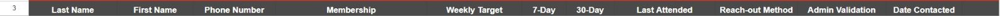
Monday completion and escalation
- Correct Monday copy and established folder; staff can access it.
- Fresh full CSV received by email; all rows imported below the unchanged headers.
- Successful run, reconciled row totals, spot-checks and duplicate review completed.
- Needs Review evidence recorded; unresolved targets and kids-report coverage clearly flagged to Mel.
- Validated follow-up lists ready and attendance dashboard checked.
Stop and escalate if the export is missing/incomplete, required columns are absent, the script fails, totals do not reconcile, a target cannot be confirmed, kids coverage is required but missing, or the destination folder is uncertain. Provide the weekly file link, export/run time and the exact issue.
Weekly Dashboard SOP
Friday procedure for updating the high-level Urban Muaythai performance dashboard across financial, marketing, sales, attendance, and retention metrics.
Purpose
The Weekly Dashboard gives Urban Muaythai a single high-level view of business performance. It combines key metrics from Clubworx, Meta Ads, Daily Numbers, New Member tracking, and Cancellation Intelligence.
Update Frequency
- Update every Friday.
- Complete after the source spreadsheets and attendance checks have been updated.
- Use the completed dashboard as the reference point for the Friday report to Mel.
Data Sources
Systems
- Clubworx
- Meta Ads Manager
- Google Ads Budget
Spreadsheets
- Daily Numbers Check Spreadsheet
- New Member Spreadsheet
- Cancellation Intelligence Spreadsheet
Financial Metrics
Rolling 30-Day Revenue
- Open Clubworx.
- Go to Financials, then open Takings.
- Set the reporting period to the last four weeks.
- Enter the total revenue into the dashboard.
Auto-Pay Members
- Get the current number from Member Intelligence or the Clubworx Dashboard.
- Enter the current Auto-Pay Member total into the dashboard.
Suspended Members
- Get the current number from Member Intelligence or the Clubworx Dashboard.
- Record the current suspended member total.
Marketing Metrics
Facebook Ad Spend
- Open Meta Ads Manager.
- Set the date range to Last 7 Days.
- Record the total amount spent.
- Enter the value into the dashboard.
Google Ads Budget
- Record the weekly Google Ads budget.
- Use $175 as the standard weekly budget unless the actual amount has changed.
Meta Paid Leads
- Open Clubworx.
- Navigate to Prospects.
- Filter the report for the Last 7 Days.
- Count all paid Meta leads and enter the total.
Organic Leads
- Use Daily Numbers or the New Member Spreadsheet.
- Include walk-ins and other non-paid enquiry sources.
- Record the organic lead total.
Sales Metrics
- Intro Sales: record the current reporting week's total from Daily Numbers.
- Straight to Membership: record the total conversions from Daily Numbers.
- Sales Value: use the Weekly Rollover Report or New Member Spreadsheet.
- Rollovers: record the weekly rollover total from Daily Numbers.
- Rollover Percentage: record the weekly percentage from the New Member Spreadsheet.
Attendance And Retention Metrics
Weekly Attendance
- Open Clubworx.
- Navigate to the Attendance Report.
- Record the total attendance for the reporting week.
- Confirm Saturday attendance is included before entering the final figure.
Churn And Cancellations
- Churn: record weekly cancellations from Daily Numbers.
- Month-to-Date Cancellations: record the current total from Cancellation Intelligence.
Automatically Calculated Fields
No manual entry is required for these fields, but they must be reviewed after the manual data has been entered.
- Average Cost Per Lead
- Sales Conversion Percentage
- Monthly Churn Percentage
- Net Gain / Loss
Friday Update Procedure
- Update financial information: Rolling 30-Day Revenue, Auto-Pay Members, and Suspended Members.
- Update marketing metrics: Facebook Ad Spend, Google Ads Budget, Meta Paid Leads, and Organic Leads.
- Update sales metrics: Intro Sales, Straight to Membership, Sales Value, Rollovers, and Rollover Percentage.
- Update operational metrics: Weekly Attendance, Weekly Churn, and Month-to-Date Cancellations.
- Review all automatically calculated fields and confirm the results appear reasonable.
Friday Completion Checklist
- Rolling 30-Day Revenue uses the latest four-week period.
- Auto-Pay Members and Suspended Members are current.
- Facebook Ad Spend uses the last seven days.
- Google Ads Budget has been updated.
- Meta Paid Leads and Organic Leads have been counted.
- Intro Sales and Straight to Membership have been entered.
- Sales Value has been updated.
- Rollovers and Rollover Percentage have been entered.
- Weekly Attendance includes Saturday attendance.
- Weekly Churn has been updated.
- Month-to-Date Cancellations has been updated.
- Calculated fields have been reviewed for accuracy.
Quality Standard
- All manual metrics are updated from the correct source.
- Every reporting period reflects the current week.
- Automatically calculated fields display accurate results.
- The dashboard gives an accurate snapshot of Urban Muaythai's financial, marketing, sales, and operational performance.
Escalation Rules
- Escalate if Clubworx figures do not match Daily Numbers or the New Member Spreadsheet.
- Escalate if Rolling 30-Day Revenue appears inconsistent with the selected reporting period.
- Escalate if Meta Ads spending differs significantly from the expected budget.
- Escalate if attendance totals appear incomplete or do not include Saturday.
- Escalate if cancellation totals do not match the Cancellation Intelligence Spreadsheet.
- Escalate if calculated fields appear incorrect after all manual data has been entered.
Red Flag Reach Out Tracker SOP
Every Monday: members with zero attendance in the last 7 days. Tracker ready before noon; Head Coach confirms messaging ownership and approach before sending.
When and Who
Every Monday. Tracker must be updated and available before 12:00PM. Head Coach assigns messaging ownership before any messages are sent.
Reception / Admin (extract reports, paste data, populate tracker). Head Coach (review list, remove members, assign messaging ownership).
Step 1 — Extract the Reports from Clubworx
- Log into Clubworx and click Reports.
- Search for Red Flag.
- Download both reports:
- Red Flag 7 Days (Adults)
- Red Flag Kids Teams 7 Days (Kids & Teens)
- Complete this every Monday so the tracker is ready before 12:00PM.
Step 2 — Paste Data into the Tracker
- Open the Urban Red Flag Reach-Out Tracker in Google Sheets.
- Go to the “📥 Raw Data — Adults” tab. Delete last week’s data rows (keep the header row). Paste this week’s Red Flag 7 Days export.
- Go to the “📥 Raw Data — Kids & Teens” tab. Delete last week’s data rows. Paste this week’s Red Flag Kids Teams 7 Days export.
- Click the red ▶ POPULATE ADULTS button on the weekly tracker tab. A new weekly tab is created automatically, named by Monday’s date.
- Click the blue ▶ POPULATE KIDS & TEENS button. Kids & Teens are added to the same weekly tab.
Step 3 — Head Coach Reviews the List
- Head Coach opens the ‘✅ Head Coach Review’ tab.
- Review all members loaded for both Adults and Kids/Teens (Category column shows which is which).
- Tick ☑ REMOVE on any member who should NOT receive a message this week — e.g. on holidays, known personal situation, or Thailand Tour combo.
- Ticked rows turn red with strikethrough — easy to spot visually.
- The summary row at the bottom shows: Total / Adults / Kids/Teens / To Remove / To Message.
Step 4 — Refresh the Tracker
- After Head Coach completes their review, click the green 🔄 REFRESH AFTER REVIEW button.
- The weekly tracker tab updates instantly — removed members are excluded automatically.
- Confirm the tracker is ready before 12:00PM.
Step 5 — Head Coach Assigns Messaging Ownership
- Head Coach reviews the weekly tracker tab and assigns a Messaging Owner in column L for each remaining member.
- Do not send any message until the Messaging Owner and message approach are confirmed.
- Repeat 🔴 members (column V = Yes) have been flagged in a previous week. Head Coach must confirm the approach before a standard template is used — these may need a more personalised message.
- If a member needs a personalised approach, confirm this before the team sends.
Step 6 — Select and Send the Approved Message Template
- Use approved Red Flag message templates only — Adults templates 1–9, Parents templates 1–5.
- Choose the correct template based on whether the member is an adult or a parent/child contact.
- Replace all placeholders before sending: [Name], [Parent’s name], [Child’s name].
- Send via Clubworx SMS.
- Log all reach-outs in the tracker: Reached Out By, Type, Replied?, Coming Back?
Membership Exclusions & Repeat Flags
- Kickstarter (any) and Sponsored memberships are always excluded from the tracker and messages.
- Thailand Tour is excluded only when it is the member’s sole membership. Members with another active membership are retained.
- Respect all Head Coach removals. Repeat Red Flag members (column V) require the Head Coach’s confirmed approach.
Completion Checklist
- Both reports extracted every Monday: Red Flag 7 Days and Red Flag Kids Teams 7 Days.
- Data pasted into the correct raw data tabs — old rows cleared before pasting.
- POPULATE ADULTS and POPULATE KIDS & TEENS both clicked. Weekly tab created automatically.
- Head Coach reviews ✅ Head Coach Review tab and ticks ☑ REMOVE for any member to skip.
- REFRESH AFTER REVIEW clicked after Head Coach sign-off. Removed members excluded from tracker.
- Kickstarter and Sponsored members are automatically excluded — no manual action needed.
- Thailand Tour (standalone only) members are automatically excluded.
- Repeat 🔴 members (column V) are identified — Head Coach confirms approach before team sends.
- Head Coach assigns Messaging Owner (column L) before any messages are sent.
- Only approved Red Flag message templates are used. Placeholders replaced before sending.
- Tracker updated and available before 12:00PM every Monday.
Orange Flag Reach Out Tracker SOP
Every Wednesday: members with zero sessions so far this week. Head Coach reviews 10:15–10:45am; send only after approval and refresh.
When and Who
Every Wednesday. Head Coach reviews list 10:15–10:45am. SMS messages sent after Head Coach sign-off. This is a standalone Wednesday task — independent of any other meeting or session.
Reception / Admin (export, paste, populate). Head Coach (review, removals & Kickstarter calls).
Step 1 — Export from Clubworx
- Log into Clubworx and go to the dashboard.
- Click on the “M.I.A. Orange Flag” tile.
- Export the report: select Export → CSV. It will be sent automatically to your email.
- Open your email and download the report.
Step 2 — Paste into Raw Data Dump
- Open the Orange Flag Tracker in Google Sheets.
- Go to the “📥 Raw Data Dump” tab.
- Delete last week’s data rows (keep the header row in row 2).
- Paste this week’s Clubworx export starting from the first data row.
Step 3 — Populate the Weekly Tracker Tab
- Go to the “📝 Weekly Tab Template” tab.
- Click the orange ▶ POPULATE TRACKER button.
- The script will automatically:
- Create a new weekly tab named by this Wednesday’s date (e.g. “🟠 Orange Flag 21 May”)
- Load eligible SMS members into the weekly tab
- Load Kickstarter members into the 📞 Head Coach Call List tab
- Auto-flag any Repeat 🟠 members who appeared in a previous week
- Populate the ✅ Head Coach Review tab with checkboxes
Step 4 — Head Coach Reviews the List (10:15–10:45am)
- Head Coach opens the “✅ Head Coach Review” tab.
- Tick ☑ REMOVE on any member who should NOT receive an SMS today (e.g. on holidays, known situation, Thailand Tour standalone).
- Ticked rows turn red with strikethrough — easy to spot visually.
- The summary row shows: Total / To Remove / To Message.
Step 5 — Refresh After Head Coach Sign-Off
- After Head Coach completes their review, click the green 🔄 REFRESH AFTER REVIEW button.
- Removed members are excluded from the weekly tracker tab automatically.
- Confirm the weekly tab is ready before messages are sent.
- 12 Noon Approval Escalation - If you have not heard from the Head Coach by 12 noon regarding anyone who should be excluded from the Orange MIA message, do not send the SMS yet.
- Before sending, reach out to the Operations Manager via Slack to confirm approval to proceed.
Step 6 — Head Coach Calls Kickstarter Members
- Head Coach opens the “📞 Head Coach Call List” tab.
- Calls each Kickstarter member personally — these members never receive an SMS.
- Logs the call outcome in the Outcome column: Called - Coming In / Called - Not Coming / Left Voicemail / No Answer.
Step 7 — Send SMS to Remaining Members
- Team sends a supportive SMS to all members in the weekly tracker tab.
- Repeat 🟠 members (column P = Yes) appeared last week too. Consider escalating from SMS to a personal call. Head Coach to confirm approach.
- Use one of the 5 approved SMS templates below. Replace [Name] with the member’s first name.
- Log all reach-outs: Reached Out By, Type (SMS/Call/WhatsApp), Replied?, Coming Back?
Membership Exclusions & Repeat Flags
- Kickstarter (Upfront & Weekly) members: Head Coach calls only, never SMS.
- Sponsored members: excluded entirely, no SMS or call.
- Respect all Head Coach removals. Repeat Orange Flag members (column P) may need a personal call; Head Coach confirms the approach.
Completion Checklist
- Clubworx export downloaded and pasted into the 📥 Raw Data Dump tab. Old data rows cleared first.
- POPULATE TRACKER button clicked. New weekly tab created and named by Wednesday’s date.
- Kickstarter members automatically loaded into Head Coach Call List. Sponsored members excluded entirely.
- Head Coach reviews ✅ Head Coach Review tab between 10:15–10:45am and ticks ☑ REMOVE on anyone to skip.
- REFRESH AFTER REVIEW clicked after Head Coach sign-off. Removed members excluded from weekly tab.
- Head Coach calls all Kickstarter members and logs outcomes in the 📞 Head Coach Call List tab.
- Repeat 🟠 members (column P) reviewed — escalation to a personal call considered where appropriate.
- All SMS reach-outs logged in the weekly tracker: Reached Out By, Type, Replied?, Coming Back?
- This task is completed every Wednesday as a standalone task, independent of any other meeting.
Historical Membership Guide
Import the Clubworx all-members-and-prospects export, refresh the report, and review membership history by week or month.
How to Update
- Download the Clubworx report for all members and prospects, using the wide contact and membership export.
- Open RAW — Membership Export. Clear the previous export from this tab, then click A1 and paste the complete new export, including its headers.
- Keep the export’s column order. Check that contact and membership IDs, membership names, start/expiry dates, cancellation dates and Contact Created Date are included.
- Choose ⚡ Period Tracker → 🔄 Refresh All. This updates Weekly Periods, Monthly Periods, the member lists and Movement Log.
- Check Product Map for membership names flagged ⚠ NEW. Set the correct category and run Refresh All again.
- Review the latest numbers and Data Health in Period Tracker. Confirm the reporting period and Counted As At date before using the figures.
What the Draft Shows
A historical view of Total Members and Autopay Members, with the member lists behind each count. Weekly reporting runs Friday–Thursday; monthly reporting uses calendar months. The latest incomplete period is period-to-date, so check Counted As At before comparing periods.
- Total Members: Autopay + Upfront + Short Term + Trial / KS categories.
- Autopay Members: memberships categorised as Autopay in Product Map, including suspended members.
- Joined / Exited Autopay: people entering or leaving the autopay group during the period. Net Change shows the difference.
- Weekly Periods / Monthly Periods: totals, Adults and U18 breakdowns, membership categories, net movement and reconciliation checks. Separate columns also show counts including legacy products.
- List — Autopay / Joined / Exited / Other Members: the people behind the figures. Select a week or month in B3 on any List tab; all four lists switch together.
- Movement Log: the detail behind membership movements.
Quick Completion Check
- The full latest export has replaced the old raw data.
- Refresh All has completed.
- New product names have been categorised and refreshed.
- The intended period and Counted As At date are correct.
- Data Health, Reconciles? and Members Check have been reviewed; investigate anything unexpected before reporting.
Prospect & Lead Intelligence Guide
Import all members and prospects from Clubworx, refresh the workbook, and review new leads, follow-ups and lead sources for a selected week.
How to Update
- Export all members and prospects from Clubworx. Include Member contacts so leads who have already converted are retained.
- Open Raw Data and replace the previous export with the complete latest export, starting at A1 with headers included. Keep the original column order.
- Check that Contact ID, Contact Type and Contact Created Date are present. Include lead-source fields when available.
- In Settings → Export as of (B6), record the date and time the Clubworx export was run, in Brisbane time.
- Use the 🥊 Lead Dashboard menu to build / refresh the reports. Wait for the refresh to finish.
- Check the refreshed dates and Data Issues, then select the week you want to review.
What Each Tab Is For
- Lead Dashboard: overview of new leads, Member contacts, prospects to chase, the pipeline, lead trend and follow-up view for the selected week.
- Raw Data: the full Clubworx export that feeds the reports. Update this before refreshing.
- Lead Sources: the selected week’s lead channels and sources, showing where leads came from. Check the week shown in its heading.
- Settings: source column names, contact types counted, export date/time and text-date order. The current date order is DMY.
- Data Issues: missing fields and other data checks. Resolve or explain warnings before quoting figures.
- Weekly Report: detailed counts for a chosen week, current statuses, available end-of-week status snapshots and the contacts behind the counts.
- Weekly Trend: a 12-week comparison of new leads, current Prospect/Member counts and website enquiries where source data is available.
- _LD_Data (hidden): internal supporting data for the reports. Leave this tab to the automation.
How to Choose a Particular Week
- On Lead Dashboard, choose the week from the dropdown in C4.
- Tick G4 — Only show prospects still to chase when you want the follow-up view rather than all leads from that week.
- On Weekly Report, use the dropdown in B3. Choose a listed week or Latest completed week. You can also type a date; the selector snaps to the Friday starting that week.
- When comparing the Dashboard, Lead Sources and Weekly Report, confirm that their displayed week headings match.
Understanding the Report Dates
- Reporting week: Friday 00:00 through Thursday 23:59, in Australia/Brisbane time.
- Contact Created Date: assigns each lead to a week. It is the enquiry/contact creation date, not the membership start or export date.
- Export as of: when the Clubworx data was captured. It dates status snapshots; it does not change which week a lead belongs to.
- Refreshed: when the workbook processed the data. Refreshing an older export does not make its contact statuses current.
- In progress: the current week is incomplete. Use the latest completed week for a full-week comparison.
- Prospect today / Member today: the selected week’s leads classified by the latest exported Contact Type. Member includes converted leads and people who joined directly; it is not necessarily conversion during that week.
- Status at end of week: requires a saved snapshot from before that week ended. “Not available” means no suitable snapshot exists; it does not mean zero leads.
Member Intelligence Report SOP
Procedure for refreshing membership breakdowns and cancellation insights using the latest Clubworx exports.
Purpose
The Member Intelligence Report provides a complete breakdown of Urban Muaythai's active membership base. It automatically categorises members by membership type, program, age group, and status so the team can monitor the overall composition of the gym.
This report is updated whenever current membership data is required and is commonly used for weekly reporting and dashboard updates.
Required Tools
- Clubworx
- Member Intelligence Spreadsheet
- Apps Script
Data Sources
The Member Intelligence Report uses three Clubworx exports as source data.
- Active Members Report
- Suspended Members Report
- Cancellations Report — January 1 to December 31 of the year being reported
Step 1 - Export The Active Members Report
- Open Clubworx.
- Navigate to the Reports section.
- Export the Active Members report.
- Download the report.
Step 2 - Export The Suspended Members Report
- In Clubworx, export the Suspended Members report.
- Download the report.
Step 3 - Export The Cancellations Report
- Open the Cancellations report in Clubworx.
- Set the date range to January 1 through December 31 of the same reporting year.
- Download the complete export.
Step 4 - Update The Raw Data Tabs
Open the Member Intelligence Spreadsheet and paste the exported reports into their matching tabs.
- Raw Data - Active Members export
- Raw Suspensions - Suspended Members export
- RAW — Cancellations - full-year Cancellations export
Step 5 - Refresh The Report
- Click the Urban MT menu.
- Select Refresh All (Refresh All Tabs).
- Allow the script to complete.
Step 6 - Review The Generated Reports
Once the refresh is complete, the spreadsheet automatically updates all reporting tabs and summary figures. No manual calculations are required.
- Auto-Pay Breakdown
- Loyal Members
- New Members
- Under 18 (Kids & Teens)
- Member Roster
- Auto-Pay Members
- Trial Members
- Suspended Members
- Front-End Memberships
- Other Membership Types
- Product Breakdown
- Cancellations — autopay cancellations and expiries, recent trends and scheduled endings
Cancellation Insights
After Refresh All, open Cancellations to review autopay memberships ending this week, the prior three weeks, the last 90 days and scheduled future endings. The view distinguishes cancellations from expiries.
Using The Report
- Update the Weekly Dashboard.
- Verify Auto-Pay Member totals.
- Verify Suspended Member totals.
- Review membership composition.
- Monitor trial and front-end memberships.
- Analyse membership product distribution.
- Review cancellation and expiry trends to support retention follow-up.
Completion Checklist
- The latest Active Members report has been exported from Clubworx.
- The latest Suspended Members report has been exported from Clubworx.
- The January 1–December 31 Cancellations export has replaced the old data in RAW — Cancellations.
- The Active Members report has been pasted into the Raw Data tab.
- The Suspended Members report has been pasted into the Raw Suspensions tab.
- Refresh All Tabs has been run successfully.
- All reporting tabs have updated without errors.
- Auto-Pay Members and Suspended Members match the latest Clubworx figures.
- All summary reports display current information.
- Cancellations insights have updated and the reporting year has been checked.
Quality Standard
- All three raw data exports have been updated.
- The refresh script has completed successfully.
- All report tabs display current information.
- Membership categories accurately reflect the latest Clubworx data.
- The report is ready to support weekly reporting and dashboard updates.
Escalation Rules
- Escalate if the Active Members, Suspended Members or Cancellations report cannot be exported from Clubworx.
- Escalate if the raw data cannot be imported into the spreadsheet.
- Escalate if Refresh All Tabs fails to complete.
- Escalate if report totals do not match Clubworx.
- Escalate if Auto-Pay or Suspended Member counts appear incorrect.
- Escalate if any reporting tab fails to populate after the refresh.
- Escalate if cancellation insights remain blank or do not reflect the latest import.
Cancellation Analysis Spreadsheet SOP
Export the full 2026 cancellation report, replace the source data, refresh all tabs, and check the reporting period and churn figures.
Before you start
You need access to Clubworx and editing access to the Cancellation Analysis spreadsheet. Complete this in order: export → replace RAW data → Refresh All → check every report. The script runs from the spreadsheet menu; you do not need to open Apps Script.
These screenshots show the actual controls and workbook headers, checked on 11 October 2026. Member records are omitted.
Step 1 — Open cancellations in Clubworx
- Open the Clubworx Dashboard.
- Open the Cancellations tile/report.
- If the report selector is shown, select Cancellations.
Step 2 — Set the full-year dates and export
- Set the start date to 01/01/2026.
- Set the end date to 31/12/2026 and apply the range.
- Check both dates on screen, then click Export.
- Open the downloaded CSV from your browser downloads or Downloads folder in Excel or Google Sheets.
Step 3 — Replace the RAW export starting at A4
- Open the spreadsheet using the button above. Click RAW — Cancellations.
- Check that the CSV has these 11 columns, in this order: Name, Membership, Up-front Amount, Recurring Amount, Recurring Payment Frequency, Membership Start, Membership End, Membership Duration, Total Collected, Cancellation Type, Reason.
- Clear the old imported values in A4:K through the last old data row. To select the current sheet’s 1,000 rows, type A4:K1000 in the name box at the top left, press Enter, then press Delete to clear values. If the sheet has more rows, extend the range through the last old row.
- In the opened CSV, select all 11 columns’ used rows, including the header. Copy them.
- Return to RAW — Cancellations. Type A4 in the name box, press Enter, then paste. The CSV header belongs in row 4; the first member belongs in row 5.
- Check the first and last imported rows. Confirm names are in A, reasons in K, and the CSV’s data-row count matches the imported data-row count.
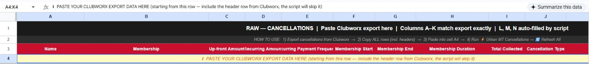
If Sheets blocks the paste because row 4 is merged: select only A4:K4, use Format → Merge cells → Unmerge, select A4 again, and paste the CSV. Do not unmerge or clear the title rows.
Step 4 — Run Refresh All
- Open ⚡ Urban MT Cancellations in the top menu.
- Choose 🔄 Refresh All — Categorise + Rebuild All Tabs.
- Wait without editing the sheet. The script categorises RAW and rebuilds all five reporting tabs.
- Look for the success message “✅ Cancellation Analysis refreshed!”, review its totals, and dismiss it.
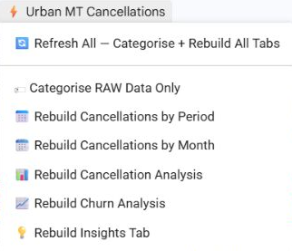
Step 5 — Check the source and reporting tabs
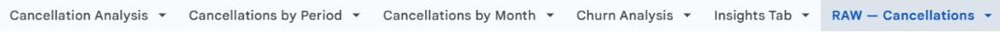
Start with RAW. Confirm L: Category, M: Counted, N: Reporting Period have been populated for imported records. Do not manually overwrite these columns.
Counted = Yes identifies included churn exits; No indicates an excluded record. Kickstarter, casual, short-term, upfront, trial, sponsored and deposit products can be excluded. The export’s total rows will therefore differ from counted exits. Investigate an unexpected classification with Mel.
Cancellations by Period
Review the required Friday–Thursday reporting week. Check member, membership, Cancellation Date, Category, Counted, Cancel Type and Reason against the source. Compare counted rows within the same period, rather than all export rows.
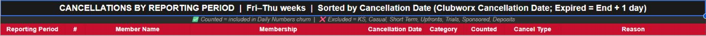
Cancellations by Month
Review the required calendar month, from the first to the last day. Check the same fields and the Counted flag. The script uses Membership End as the cancellation date for Cancelled rows, and Membership End + 1 day for Expired rows; a record may therefore fall into the next month or year. Keep the original export dates unchanged.
Cancellation Analysis
Check the reporting date and completed week near the top before reading the executive snapshot or rolling 30-day results. The dashboard reports through the last completed Thursday; future-dated rows in the full-year export are not current completed-period exits.
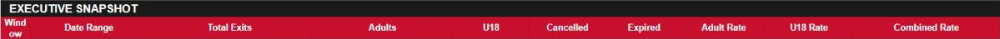
Churn Analysis
Check that the correct period has Adult and U18 membership bases and that the status and churn percentages are valid. Weekly bases come from that week in Historical Membership; monthly bases use the month’s starting count. Existing manual bases can be retained when a historical week is missing. Confirm a retained base with Mel. Do not substitute today’s live membership count for a historical base or guess a missing denominator.
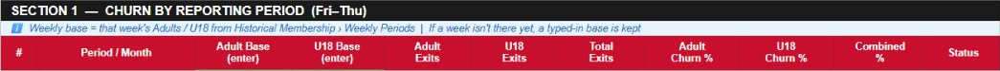
Insights Tab
Check the reporting cutoff and completed week, then review churn and exit-reason summaries for the same period. Confirm that totals agree with the other tabs for matching dates and counted exits.
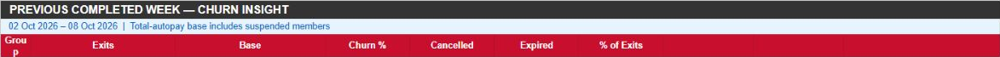
Completion checklist
- The Clubworx export covers 1 January–31 December 2026.
- The latest full CSV replaced A–K, with its header in row 4 and first member in row 5.
- The imported data-row count and first/last rows match the CSV, with no old rows left below it.
- Refresh All finished with its success message and updated all five reporting tabs.
- Categories, Counted flags, reporting dates and membership bases were checked.
- Counts were compared for the same period and inclusion rules; any unexplained difference was raised with Mel.
When to escalate
Ask Mel if the export dates or columns are wrong, the CSV cannot be pasted, the menu is missing, refresh fails, a membership is unexpectedly excluded, a historical base is missing, or matching-period counts disagree. Include the affected tab, period and error message. Resolve the issue before using those figures for operational reporting.
Automated Class Attendance Tracker SOP
Export the complete 2026 class report, replace Raw Import, validate and sync, then check the Dashboard and prepare the Friday–Thursday red-class report.
Start here
The Admin/Assistant completes this before the weekly red-class report, and whenever management needs fresh class figures. You need Clubworx access and editing access to the tracker. Follow this order: export → replace Raw Import → validate → sync → review the latest log → check the reports.
Instructions and screenshots checked against the live tracker and script on 11 October 2026. Screenshots show controls and headers without private attendance totals.
- Raw Import: original Clubworx CSV in A–J; K (Parsed Event Time) is generated by validation/sync.
- January–December: monthly class grids, coaches, attendance and colour indicators.
- Dashboard: selected day, Friday–Thursday week and calendar-month totals from Raw Import.
- Sync Log: a history of sync runs and the classes that need investigation.
- Settings: threshold and name-alias reference. Analytics Data: background calculations. README: setup reference. Routine staff updates use the menu below; do not reinstall the script.
Step 1 — Open the correct Clubworx report
- Open Clubworx for Urban Muaythai – Miami.
- Click Reports → Attendance.
- Open All Attendances (event bookings), or use the direct report button above. This is the class/event source for the tracker’s Event Attendances CSV.
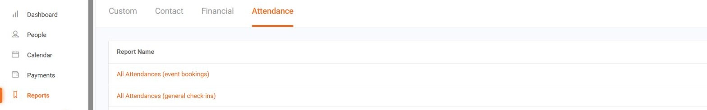
Step 2 — Export the complete year
- Set Starts From = 01 Jan 2026 and Starts To = 31 Dec 2026.
- Clear the event-name search and individual Location, Trainer, Event type, Style and Spaces remaining filters so they do not remove required classes. Keep the approved cancelled-event setting; ask Mel if unsure.
- Click Filter and wait until the loading overlay disappears. Recheck both dates.
- Click the download-arrow Export button at the far right of the Filter row.
- Locate the resulting original CSV. Check browser downloads; if Clubworx displays an email-delivery notice, open that export email and download its CSV. Do not continue until the file is available.
- Open the CSV in Excel or Google Sheets and confirm the date coverage and column headings below. Keep the file in the approved staff location.
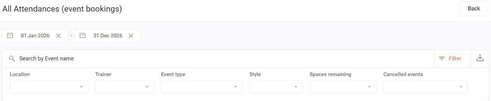
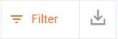
Leave the source Event Time values intact. A narrow Excel column may display ########; widen it to inspect the date rather than copying the hash display into the tracker. Do not manually swap day and month.
Step 3 — Replace Raw Import at A1
- Open Raw Import using the tracker button above.
- Check the CSV has these 10 original columns in order: Day of Week, Event Time, Name, Event Type, Max. Attendees, No. of Bookings, No. of Attendees, No. of Absences, Trainer, Location.
- Clear the old source values and parsed dates in A1:K through the last old row. The current tab has 3,072 rows: type A1:K3072 in the name box at the top left, press Enter, then Delete to clear values. Extend the range if the tab has grown. Keep the tab itself.
- In the CSV, copy all used rows in the 10 original columns, including the header.
- Return to Raw Import. Type A1 in the name box, press Enter, then paste. The original header belongs in row 1; the first event belongs in row 2.
- Check the first and last pasted rows, the CSV data-row count, and separate columns A–J. Remove leftover old rows before continuing. Column K will be rebuilt automatically.
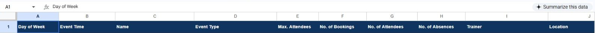
Step 4 — Validate before syncing
- Open 🥊 Attendance Sync on the top menu.
- Select Validate raw import.
- Wait for “Raw import is valid.” Check its Rows count against the CSV’s data rows, then dismiss it.
- Check that K: Parsed Event Time now contains real dates/times. Spot-check one unmistakable date and a date where day/month could be confused against Day of Week and Clubworx.
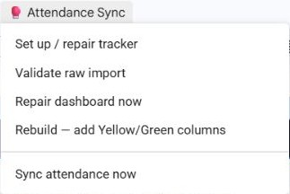
Step 5 — Run Sync attendance now
- After confirming the complete-year source and validation result, choose 🥊 Attendance Sync → Sync attendance now.
- Wait without editing the spreadsheet until “Sync complete.” appears.
- Record the summary: Written, Coach corrected, Class name corrected, Skipped — future, Skipped — location, Flagged, Unmatched.
- Dismiss the message and continue to Sync Log, even if the sync completed.
The sync updates matched attendance, coach and class names from Clubworx. Future events are skipped. The monthly-grid location filter includes locations containing Miami; other locations are skipped. A confirmed zero for a past matched class is written as zero. A blank monthly cell may mean future, missing or unmatched data; it is not a confirmed zero.
Step 6 — Review the latest Sync Log run
- Open Sync Log.
- Go to the bottom of the used log, using Ctrl+End or scrolling. Find the newest — SYNC RUN date/time — row that matches the run you just completed.
- Read that summary and the issue rows below it. Earlier runs remain in the sheet; do not report an old error as a new one.
- For each current issue, check Event Time, Class / Detail, Trainer, Tab / Cell and Notes against Clubworx.
- Correct an incomplete or wrong source export and repeat Steps 2–6. Escalate layout/matching issues to Mel before relying on affected figures.
- CLASS_MISMATCH / NO_TIME_MATCH: check class, date, start time and monthly grid. Do not move attendance to a nearby class by guesswork.
- DUPLICATE_TARGET: two export rows matched the same cell; investigate the source events.
- SUNDAY_ROW / NO_TAB: the grid has Monday–Saturday blocks, or a required monthly tab is missing. Pass the affected events to Mel.
- UNPARSEABLE_DATE / INVALID_ATTENDANCE: check original dates and whole-number attendee counts.
Step 7 — Check monthly attendance and colours
- Open a relevant month and locate the actual date above the weekday block.
- Read Time, Class, Coach and #; # is the imported attendee count.
- Check a known past class against Raw Import/Clubworx and inspect a second class from an earlier month, confirming that history remains after the full rebuild.
- Review →Y (extra attendees needed to leave red) and →G (extra attendees needed to reach green). These are calculated helpers; do not type into them.
Red: attendance alert. Yellow: caution. Green: healthy attendance. Targets vary by class and time; use the class’s helpers and the Settings reference. Escalate any disagreement between colour, helpers and threshold reference.
Step 8 — Select the Dashboard reporting date
- Open Dashboard.
- Edit only B3 — Selected date. For a weekly report, enter the Thursday ending the last completed reporting week, in day/month/year format.
- Read Selected Day, Selected Week (Fri–Thu), Selected Month. A date in an unfinished week produces a current-week view; do not label it a completed week.
- Check Attended, Booked and Absences against the corresponding Raw Import dates and export fields.
Booked is the source booking count, Attended is the source attendee count, and Absences is the source absence count. Use those fields directly; do not assume every difference between bookings and attendance is a no-show.
Step 9 — Prepare the weekly red-class report
- Write the completed Friday–Thursday start and end dates at the top.
- Review every class within those actual dates, including both monthly tabs if the week crosses a month boundary.
- List red classes with date, start time, class, coach, bookings, attendees and absences. Get bookings/absences from the matching Raw Import row; the monthly # column contains attendance.
- Check blank or unmatched past classes separately. Do not silently leave them out or call them zero.
- Explain recurring low-attendance classes or time slots using the confirmed booking and absence figures. Red can reflect low bookings as well as no-shows.
- Send the checked report to Mel through the usual staff reporting process. State any unresolved missing classes and their effect on completeness.
Before finishing
- Full 1 January–31 December 2026 CSV imported at A1, with original headings and no old rows left behind.
- Raw validation passed; row count and dates checked.
- Sync complete message reviewed and newest Sync Log issues resolved or escalated.
- Past class counts, coach/class details and earlier-month history checked.
- Dashboard B3 and the report use the correct completed Friday–Thursday period.
- All red classes and missing past classes reviewed before reporting to Mel.
When to stop and ask Mel
Escalate missing export columns, an incomplete date range, ambiguous dates, validation/sync failures, missing menu or monthly tabs, unmatched classes, unexplained totals or threshold disagreements. Include the affected date/class, tab/cell and latest error or Sync Log note. Preserve the original export and avoid manually overwriting generated attendance or formulas.
Attendance Dashboard SOP
Procedure for verifying the live attendance dashboard, confirming weekly attendance data, and checking Needs Review before reporting or follow-up.
Purpose
The Attendance Dashboard provides a live overview of member attendance trends across Urban Muaythai. It automatically reads data from the weekly Attendance Past 7 Days spreadsheets and presents attendance metrics in a central dashboard.
The dashboard is primarily used to monitor attendance performance, identify members requiring review, and support the weekly Fringe Reach Out process.
Update Frequency
- Automatically refreshes every day at 7:00 AM.
- Every Monday, verify that the latest attendance data has updated successfully.
Source Of Truth
The Attendance Dashboard automatically reads its data from the Fringe Reach Out Google Drive folder. This folder contains the weekly Attendance Past 7 Days spreadsheets.
It is essential that the latest Attendance Past 7 Days spreadsheet is:
- Saved in the correct Fringe Reach Out folder.
- Named correctly.
- Fully processed before the dashboard refreshes.
Automatic Refresh
The Attendance Dashboard is configured to refresh automatically every morning at 7:00 AM. Normally, no manual action is required.
Monday Verification
Every Monday, after completing the Attendance Past 7 Days process, verify that the Attendance Dashboard has updated successfully.
- The latest attendance figures are displaying.
- Member counts appear correct.
- Dashboard totals match the current Attendance Past 7 Days spreadsheet.
- No obvious data is missing.
Manual Refresh
If the dashboard has not updated automatically:
- Open the Attendance Dashboard.
- Click the Dashboard Tools menu.
- Select Refresh Now.
- Allow the script to complete.
Needs Review
- Open the Needs Review section.
- Review all members listed.
- Identify any records requiring investigation or correction.
Examples may include:
- Members with missing attendance data.
- Members that could not be categorised automatically.
- Data inconsistencies between attendance reports.
- Members requiring manual verification.
Monday Completion Checklist
- The latest Attendance Past 7 Days spreadsheet has been saved in the Fringe Reach Out folder.
- The dashboard has refreshed successfully.
- Attendance figures match the latest weekly attendance spreadsheet.
- If required, Refresh Now has been run from the Dashboard Tools menu.
- The Needs Review section has been checked.
- Outstanding review items have been investigated or resolved.
Quality Standard
- The latest attendance data has been successfully loaded.
- Dashboard figures accurately reflect the current Attendance Past 7 Days spreadsheet.
- All automatic calculations have updated correctly.
- The Needs Review section has been checked and outstanding issues have been addressed.
- The dashboard is ready to support weekly attendance reporting and member follow-up.
Escalation Rules
- Escalate if the dashboard fails to refresh automatically.
- Escalate if Refresh Now fails to complete.
- Escalate if the latest Attendance Past 7 Days spreadsheet is not recognised.
- Escalate if dashboard figures do not match the latest attendance report.
- Escalate if the Needs Review section contains unresolved issues that cannot be corrected.
- Escalate if the dashboard displays missing or incomplete attendance data.